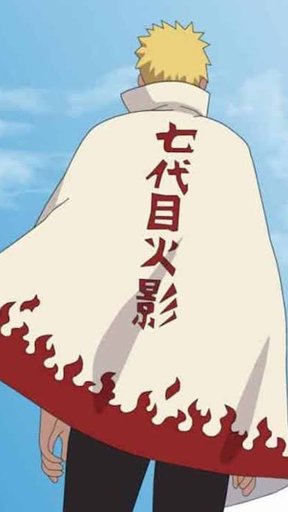
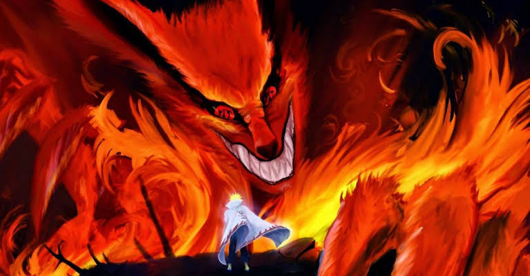

Como a franquia Naruto possui vários filmes de animação e um projeto de filme com atores reais (live-action) em desenvolvimento pela Lionsgate, a descrição varia conforme a produção buscada. A história base acompanha Naruto Uzumaki, um jovem órfão da Vila da Folha que sonha em se tornar o líder Hokage
As sombras da Floresta da Morte estavam mais densas do que o normal naquela noite. O Exame Chunin havia terminado há poucas horas, mas para Naruto Uzumaki, a verdadeira prova estava apenas começando. Sentado sobre a cabeça da estátua de Hashirama Senju no Vale do Fim, o jovem ninja observava a chuva fina começar a cair. O céu noturno parecia refletir o peso que carregava no peito. Perto dali, entre as árvores, Sasuke Uchiha caminhava em direção à escuridão, impulsionado por um desejo incontrolável de vingança que o afastava de tudo o que conheciam. "Eu prometi à Sakura que traria você de volta, Sasuke!", a voz de Naruto ecoou contra as rochas, rasgando o silêncio da tempestade. Ele saltou da estátua, pousando a poucos metros do rival. "Eu não vou deixar você se entregar ao Orochimaru!" Sasuke nem sequer se virou de imediato. Quando o fez, o tom avermelhado do Sharingan brilhava na penumbra. "Você não entende, Naruto. Nós somos diferentes. Você busca laços; eu preciso cortá-los para ficar mais forte." A chuva apertou, transformando o solo em lama enquanto os dois avançavam um contra o outro. Não havia mais espaço para palavras gentis. Cada golpe trocado carregava anos de rivalidade, solidão compartilhada e uma dor que só os dois compreendiam. Naruto usava a força da sua determinação, multiplicando-se em dezenas de clones, enquanto Sasuke desviava com precisão cirúrgica, movido pela marca da maldição que começava a se espalhar por seu corpo. No ápice do confronto, o ar ao redor congelou. Na mão direita de Sasuke, o trovão ressoou com o brilho azul do Chidori. Na mão de Naruto, a energia espiralou em azul intenso, formando o Rasengan. Eles se lançaram ao ar. A luz do choque entre os dois jutsus iluminou todo o vale, criando uma esfera de energia pura que partiu a água do rio ao meio. Por um segundo, no centro da tempestade, seus olhares se cruzaram — não como inimigos, mas como dois garotos que só queriam ser reconhecidos. Quando a fumaça se dissipou, a chuva lavava o silêncio do Vale do Fim. Sasuke estava de pé, observando Naruto desacordado no chão. Seu protetor de testa, riscado no meio, jazia ao lado do amigo. Sasuke segurou o próprio ombro, sentindo a dor da batalha, deu as costas e caminhou sozinho para a escuridão da floresta. Naruto abriu os olhos horas depois, sob o olhar atento de Kakashi, que havia chegado tarde demais. Olhando para o céu que começava a abrir, o garoto da Raposa de Nove Caudas apertou o pênsil com força. Ele havia falhado daquela vez, mas enquanto respirasse, a história deles não terminaria ali.
O primeiro filme da franquia, Naruto o Filme: Ninja Clash in the Land of Snow (2004), surgiu como uma iniciativa estratégica para expandir a marca devido ao enorme sucesso que o anime e o mangá alcançaram no Japão e no exterior entre 2002 e 2003. Quem Criou e Desenvolveu Criador da Franquia: Masashi Kishimoto (autor do mangá original). Embora não tenha escrito o roteiro do primeiro longa, ele supervisionou a produção, aprovou os novos designs de personagens e deu o aval para a expansão do universo. Estúdio de Animação: Studio Pierrot, responsável por adaptar a série semanal de TV para os cinemas. Diretor: Tensai Okamura, cineasta experiente que dirigiu a animação e trouxe um tom visual mais cinematográfico e dinâmico para as cenas de ação. Roteirista: Katsuyuki Sumisawa, encarregado de criar uma história original que se encaixasse na linha do tempo do anime sem alterar os acontecimentos do mangá. Como Surgiu a Ideia e o Conceito Aproveitando o "Filler" Estratégico: A ideia de criar um longa-metragem derivado surgiu da necessidade de oferecer uma experiência de grande escala para os fãs enquanto o mangá continuava sendo publicado. Os filmes funcionavam como histórias independentes (spin-offs). Inovação Visual e Temática: Para diferenciar o filme dos episódios normais de TV, a equipe decidiu tirar a equipe do Time 7 (Naruto, Sasuke, Sakura e Kakashi) do ambiente habitual da Vila da Folha. Eles criaram o "País da Neve", um cenário repleto de tecnologia incomum para o universo de Naruto na época, como trens a vapor e projetores de cinema. Orçamento Aumentado: A distribuidora Toho apostou alto no projeto, garantindo uma verba muito superior à de um episódio convencional. Isso permitiu contratar diretores de animação renomados para desenhar as sequências de luta quadro a quadro com mais fluidez. O sucesso estrondoso de bilheteria no Japão (arrecadando mais de 1,3 bilhão de ienes) transformou o lançamento de filmes de Naruto em uma tradição anual que durou mais de uma década.

